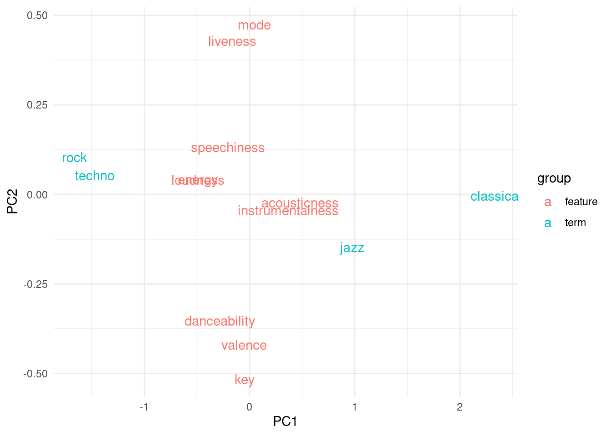
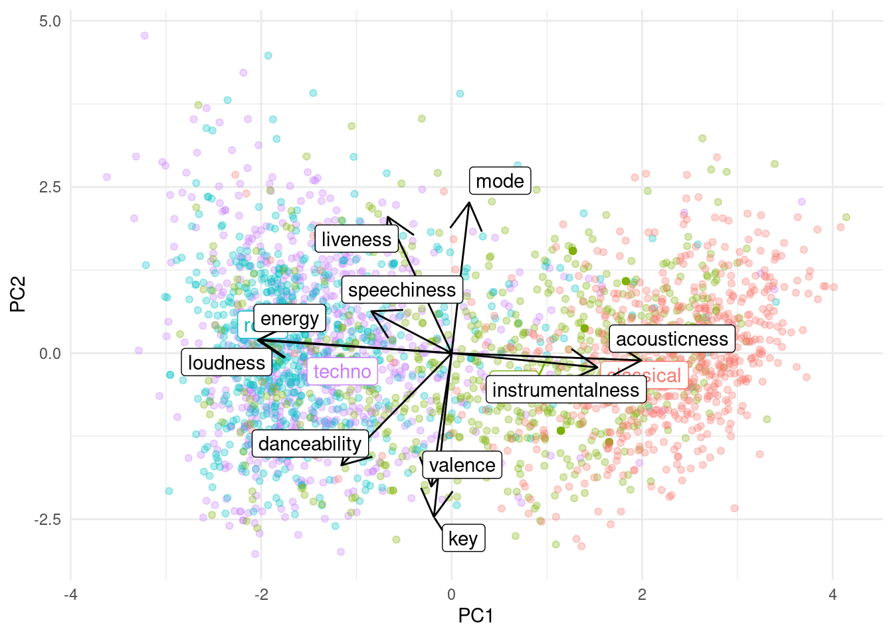

Predicting music genre from spotify using deep learning
Abstract
Music genres feature particular patterns that can be used to predict the genre of a track by analyzing its pitch sequences. The Spotify API provides features for entire tracks, e.g. its loudness or acousticness scores, as well as the sequence of the pitches. About half the the variance of totaling 3600 tracks across techno, rock, jazz and classicsal generes could be explained by these summary features alone. However, there was no strong separation between the genre clusters. Deep learning was then applied to find patterns of the detailed pitch sequence. However, only 30% of the test tracks could be classified correctly using CNN or LSTM architectures.
ETL pipeline
source("_targets.R")── Attaching packages ─────────────────────────────────────── tidyverse 1.3.2 ──
✔ ggplot2 3.3.6 ✔ purrr 0.3.4
✔ tibble 3.1.8 ✔ dplyr 1.0.10
✔ tidyr 1.2.1 ✔ stringr 1.4.1
✔ readr 2.1.2 ✔ forcats 0.5.1
── Conflicts ────────────────────────────────────────── tidyverse_conflicts() ──
✖ dplyr::filter() masks stats::filter()
✖ dplyr::lag() masks stats::lag()
Attaching package: 'spotifyr'
The following object is masked from 'package:broom':
tidytar_load(c("terms", "track_audio_features", "selected_audio_features", "audio_analyses", "track_train_test_split", "track_searches", "track_pitches", "valid_tracks", "track_audio_analyses"))
tar_visnetwork()── Attaching packages ─────────────────────────────────────── tidyverse 1.3.2 ──
✔ ggplot2 3.3.6 ✔ purrr 0.3.4
✔ tibble 3.1.8 ✔ dplyr 1.0.10
✔ tidyr 1.2.1 ✔ stringr 1.4.1
✔ readr 2.1.2 ✔ forcats 0.5.1
── Conflicts ────────────────────────────────────────── tidyverse_conflicts() ──
✖ dplyr::filter() masks stats::filter()
✖ dplyr::lag() masks stats::lag()
Attaching package: ‘spotifyr’
The following object is masked from ‘package:broom’:
tidyData overview
Spotify was queried by the following terms. Up to 50 tracks per term were retrieved.
terms[1] "techno" "rock" "jazz" "classical"Total number of tracks:
nrow(track_searches)[1] 3600Tracks per term:
track_searches |> count(term)# A tibble: 4 × 2
term n
<chr> <int>
1 classical 900
2 jazz 900
3 rock 900
4 techno 900Features per track:
tracks <-
track_audio_features |>
left_join(track_searches, by = "id") |>
filter(id %in% valid_tracks) |>
mutate(term = factor(term))
colnames(tracks) [1] "danceability" "energy"
[3] "key" "loudness"
[5] "mode" "speechiness"
[7] "acousticness" "instrumentalness"
[9] "liveness" "valence"
[11] "tempo" "type.x"
[13] "id" "uri.x"
[15] "track_href" "analysis_url"
[17] "duration_ms.x" "time_signature"
[19] "term" "offset"
[21] "artists" "available_markets"
[23] "disc_number" "duration_ms.y"
[25] "explicit" "href"
[27] "is_local" "name"
[29] "popularity" "preview_url"
[31] "track_number" "type.y"
[33] "uri.y" "album.album_type"
[35] "album.artists" "album.available_markets"
[37] "album.href" "album.id"
[39] "album.images" "album.name"
[41] "album.release_date" "album.release_date_precision"
[43] "album.total_tracks" "album.type"
[45] "album.uri" "album.external_urls.spotify"
[47] "external_ids.isrc" "external_urls.spotify" Number of tracks after sanity checks:
nrow(tracks)[1] 3477Split train/test data to not bias any analysis. Stratify by term to ensure a balanced data set.
tar_load(track_train_test_split)
tracks_train <- tracks |> inner_join(track_train_test_split) |> filter(is_train)Joining, by = "id"tracks_test <- tracks |> anti_join(tracks_train)Joining, by = c("danceability", "energy", "key", "loudness", "mode",
"speechiness", "acousticness", "instrumentalness", "liveness", "valence",
"tempo", "type.x", "id", "uri.x", "track_href", "analysis_url",
"duration_ms.x", "time_signature", "term", "offset", "artists",
"available_markets", "disc_number", "duration_ms.y", "explicit", "href",
"is_local", "name", "popularity", "preview_url", "track_number", "type.y",
"uri.y", "album.album_type", "album.artists", "album.available_markets",
"album.href", "album.id", "album.images", "album.name", "album.release_date",
"album.release_date_precision", "album.total_tracks", "album.type",
"album.uri", "album.external_urls.spotify", "external_ids.isrc",
"external_urls.spotify")Track features per term
features <- c("danceability", "acousticness")
tracks_train |>
select(term, features) |>
mutate(across(features, scale)) |>
pivot_longer(features) |>
ggplot(aes(term, value)) +
geom_quasirandom() +
geom_boxplot(outlier.size = NULL, width = 0.5) +
facet_wrap(~ name, scales = "free") +
coord_flip()Note: Using an external vector in selections is ambiguous.
ℹ Use `all_of(features)` instead of `features` to silence this message.
ℹ See <https://tidyselect.r-lib.org/reference/faq-external-vector.html>.
This message is displayed once per session.
- Techno songs are high in danceability and low in acousticness
(Linear Euclidean) ordination biplot to show at all numeric features at once:
pca <-
track_audio_features |>
semi_join(tracks_train) |>
column_to_rownames("id") |>
select(selected_audio_features) |>
mutate(across(everything(), scale)) |>
filter(if_any(everything(), ~ ! is.na(.x))) |>
prcomp()Joining, by = c("danceability", "energy", "key", "loudness", "mode",
"speechiness", "acousticness", "instrumentalness", "liveness", "valence",
"tempo", "id", "track_href", "analysis_url", "time_signature")
Note: Using an external vector in selections is ambiguous. ℹ Use
`all_of(selected_audio_features)` instead of `selected_audio_features` to
silence this message. ℹ See
<https://tidyselect.r-lib.org/reference/faq-external-vector.html>. This message
is displayed once per session.tracks_pca <-
pca$x |>
as_tibble(rownames = "id") |>
left_join(track_audio_features, by = "id") |>
left_join(track_searches, by = "id")
# get medoids
track_clusters <-
tracks_pca |>
group_by(term) |>
summarise(across(c(PC1, PC2), median))
tibble() |>
ggplot(aes(x = PC1, y = PC2, color = group)) +
geom_text(
data = track_clusters |> mutate(group = "term"),
mapping = aes(label = term)
) +
geom_text(
data = pca$rotation |> as_tibble(rownames = "feature") |> mutate(group = "feature"),
mapping = aes(label = feature)
)
More detailed biplot:
tibble() |>
ggplot(aes(x = PC1, y = PC2)) +
geom_point(
data = tracks_pca,
mapping = aes(color = term),
alpha = 0.3
) +
ggrepel::geom_label_repel(
data = track_clusters,
mapping = aes(label = term, color = term)
) +
guides(color = FALSE) +
ggnewscale::new_scale_color() +
geom_segment(
data = pca$rotation |> as_tibble(rownames = "feature"),
mapping = aes(x = 0, y = 0, xend = max(abs(pca$x[,1])) * PC1, yend = max(abs(pca$x[,2])) * PC2),
arrow = arrow()
) +
ggrepel::geom_label_repel(
data = pca$rotation |> as_tibble(rownames = "feature"),
mapping = aes(label = feature, x = max(abs(pca$x[,1])) * PC1, y = max(abs(pca$x[,2])) * PC2)
)
Sanity checks:
classical track are associated with acousticness
rock and techno tracks are associated with loudness
There is no clear separation between the genre clusters suggesting a complicated classification task.
Predicting the term based on the musical features
summary(pca)$importance["Cumulative Proportion","PC2"][1] 0.47009Almost half of the variance can be explained by the first principal components, motivating the prediction of the terms based on the features. These features were also significantly different across the terms:
features |>
paste0(collapse = "+") |>
paste0("~ term") |>
lm(data = tracks) |>
anova()Analysis of Variance Table
Response: danceability + acousticness
Df Sum Sq Mean Sq F value Pr(>F)
term 3 213.03 71.009 915.1 < 2.2e-16 ***
Residuals 3473 269.49 0.078
---
Signif. codes: 0 '***' 0.001 '**' 0.01 '*' 0.05 '.' 0.1 ' ' 1features |>
paste0(collapse = "+") |>
paste0("~ term") |>
lm(data = tracks) |>
lm() |>
summary()
Call:
lm(formula = lm(paste0(paste0(features, collapse = "+"), "~ term"),
data = tracks))
Residuals:
Min 1Q Median 3Q Max
-1.18660 -0.17087 0.00622 0.16813 0.96074
Coefficients:
Estimate Std. Error t value Pr(>|t|)
(Intercept) 1.362783 0.009687 140.69 <2e-16 ***
termjazz -0.135915 0.013476 -10.09 <2e-16 ***
termrock -0.517331 0.013525 -38.25 <2e-16 ***
termtechno -0.588527 0.013436 -43.80 <2e-16 ***
---
Signif. codes: 0 '***' 0.001 '**' 0.01 '*' 0.05 '.' 0.1 ' ' 1
Residual standard error: 0.2786 on 3473 degrees of freedom
Multiple R-squared: 0.4415, Adjusted R-squared: 0.441
F-statistic: 915.1 on 3 and 3473 DF, p-value: < 2.2e-1644% of the variance could be explained in a linear way. Can we do better using the pitches over time as features?
Modeling sequences of pitches
Some features are highly correlated, suggesting redundancy, e.g. :
tracks |>
ggplot(aes(danceability, loudness)) +
geom_point() +
stat_smooth(method = "lm") +
stat_cor()`geom_smooth()` using formula 'y ~ x'Indeed, lots of features were significantly correlated after FDR adjustment:
tracks |>
select(selected_audio_features) |>
as.matrix() |>
Hmisc::rcorr() |>
broom::tidy() |>
ungroup() |>
mutate(q.value = p.value |> p.adjust(method = "fdr")) |>
filter(q.value < 0.05 & abs(estimate) > 0.2) |>
arrange(-abs(estimate)) |>
unite(col = comparision, column1, column2, sep = " vs. ") |>
head(10) |>
ggplot(aes(comparision, estimate)) +
geom_col() +
coord_flip() +
labs(y = "Pearson correlation")
Music is composed of shorter and longer patterns. We can make use of the temporal property by doing convolutions on the time axis while using loudness of pitch frequencies as features.
Spotify audio analysis separates the track into many segments and calculates the loudness for each of the 12 pitches (half steps) of the scale.
track_audio_analyses$audio_analysis[[1]]$segments$pitches[1][[1]] [1] 0.366 0.128 0.311 0.106 0.412 1.000 0.886 0.633 0.333 0.122 0.213 0.473First, only use intensity scores of note c to get a 2D data frame:
c_pitches <-
track_pitches |>
filter(id %in% valid_tracks) |>
unnest(pitches) |>
group_by(id) |>
mutate(segment = row_number()) |>
select(id, segment, V1) |>
pivot_wider(names_from = segment, values_from = V1)
c_pitches |>
left_join(track_train_test_split) |>
filter(is_train) |>
select(-is_train) |>
pivot_longer(-id, names_to = "segment") |>
left_join(track_searches) |>
type_convert() |>
ggplot(aes(segment, value)) +
geom_density_2d_filled() +
facet_wrap(~term, ncol = 1)Joining, by = "id"
Joining, by = "id"
── Column specification
──────────────────────────────────────────────────────── cols( id =
col_character(), segment = col_double(), term = col_character(), href =
col_character(), name = col_character(), preview_url = col_character(), type =
col_character(), uri = col_character(), album.album_type = col_character(),
album.href = col_character(), album.id = col_character(), album.name =
col_character(), album.release_date = col_character(),
album.release_date_precision = col_character(), album.type = col_character(),
album.uri = col_character(), album.external_urls.spotify = col_character(),
external_ids.isrc = col_character(), external_urls.spotify = col_character() )
Classical songs tend to be more consistent across the segment time samples.